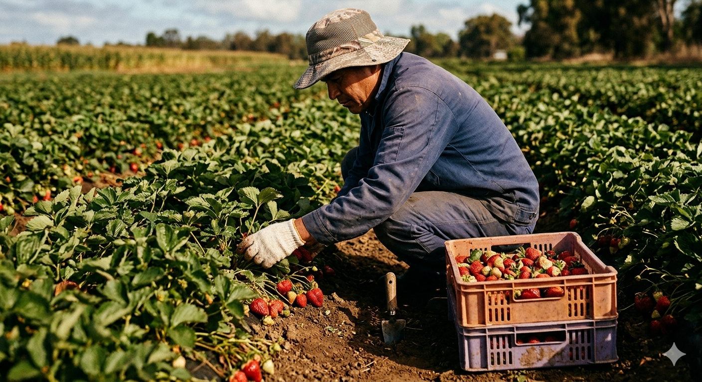
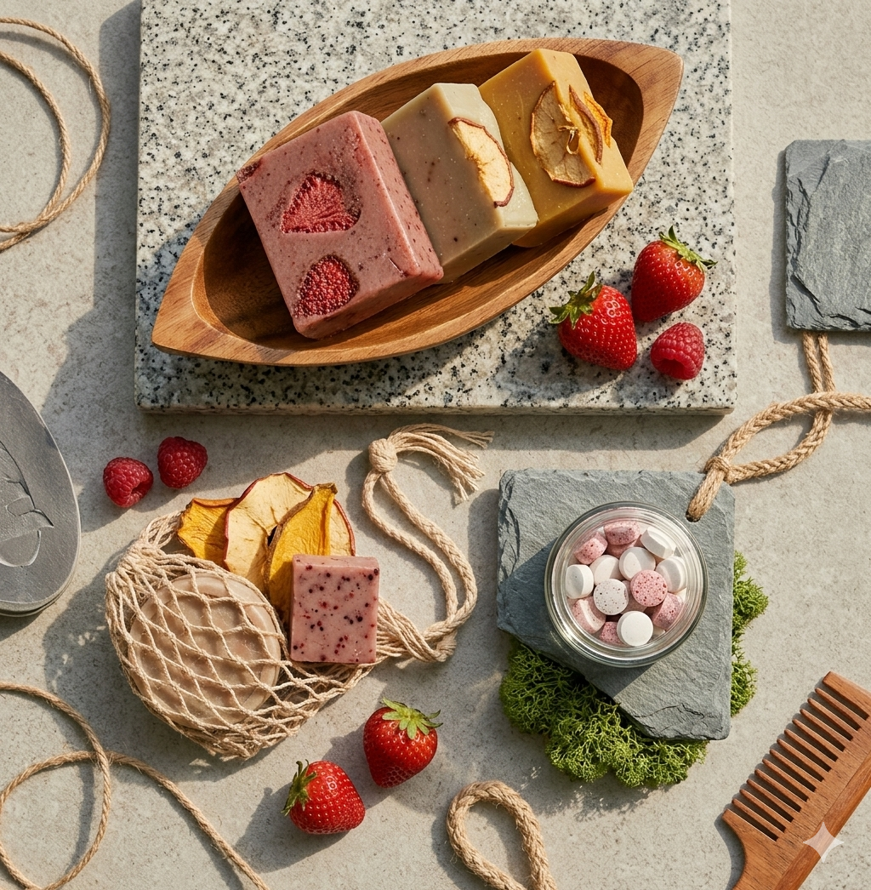
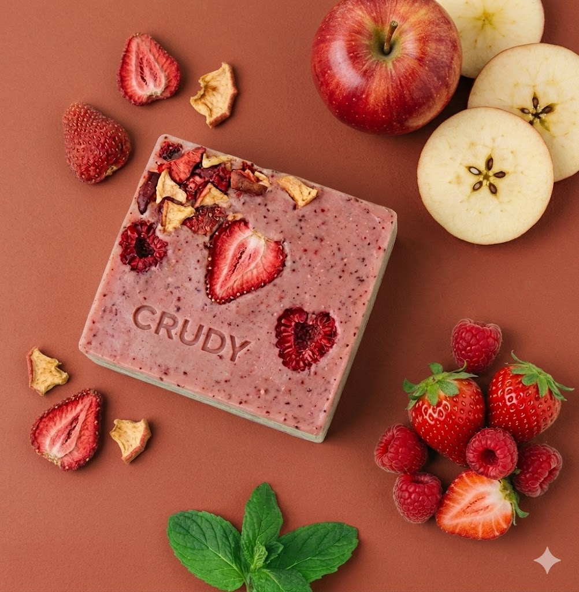
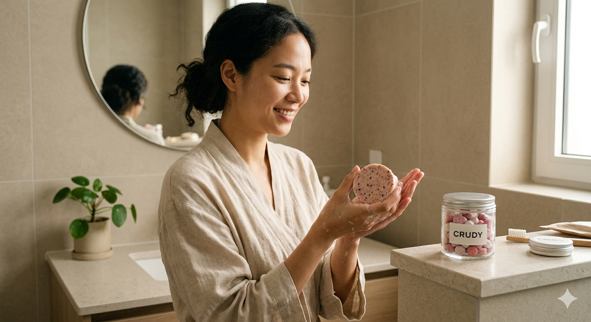

완벽하지 않아도 좋아,
본질은 더 신선하니까
공정 거래로 농가와 상생하고, 과대 포장을 줄여 지구를 지킵니다
인권을 존중하는 투명한 생산 방식을 통해
당신과 세상이 함께 아름다워지는 가치를 실천합니다.

크러디는 완벽함 대신
본질을 선택합니다.
크러디는 단지 모양이 예쁘지 않다는 이유로 외면받던 못난이 농산물에
새로운 생명력을 불어넣는 업사이클링 뷰티 브랜드입니다.
크러디는 어떤 이유에서도 동물실험을 하지 않으며,
자연을 훼손하지 않는 지속 가능한 원료만을 고집합니다.
피투박하지만 가장 자연에 가까운 방식으로 당신의 일상에 건강한 변화를 선물합니다.
- 🐰 Cruelty Free
- 🍎 Upcycled Beauty
- 🌿 Zero Waste

크러디는 가장 자연스러운
혁신을 제안합니다.
크러디는 단지 모양이 예쁘지 않다는 이유로 외면받던 못난이 농산물에
새로운 생명력을 불어넣는 업사이클링 뷰티 브랜드입니다.
특히 불필요한 수분과 화학 포장을 없앤 고체 형태의 다양한
‘제로 웨이스트(Zero-Waste)’ 제품을 개발하며,
화장품 산업과 당신의 일상에 건강한 변화를 선물합니다.
- 🧼 고체 비누
- ⚪ 고체 치약
- 🍎 업사이클 원료
- 📦 제로 포장

지속 가능함은
크러디 철학의 핵심입니다.
크러디는 전 제품에 오직 100% 식물성 원료만을 사용하며,
자연을 훼손하지 않는 지속 가능한 원료만을 고집합니다.
모양이 예쁘지 않다는 이유로 외면받던 못난이 농산물에
새로운 생명력을 불어넣어 피부와 지구 모두가 숨 쉴 수 있는 뷰티를 선보입니다.

이 모든 변화는
'투박함 속에 진정한 가치가 있다'는 믿음과,
정직하게 땀 흘린
우리 농가의 진심이 연결되어 시작되었습니다.
크러디는 양이 예쁘지 않아 외면받던 자원에 새로운 생명력을 불어넣으며,
자연과 사람의 일상이 건강하게 공존하는 내일을 위해
끊임없이 혁신해 나갑니다.
- 가치소비
- 비건포뮬러
- 제로웨이스트
- 상생경영